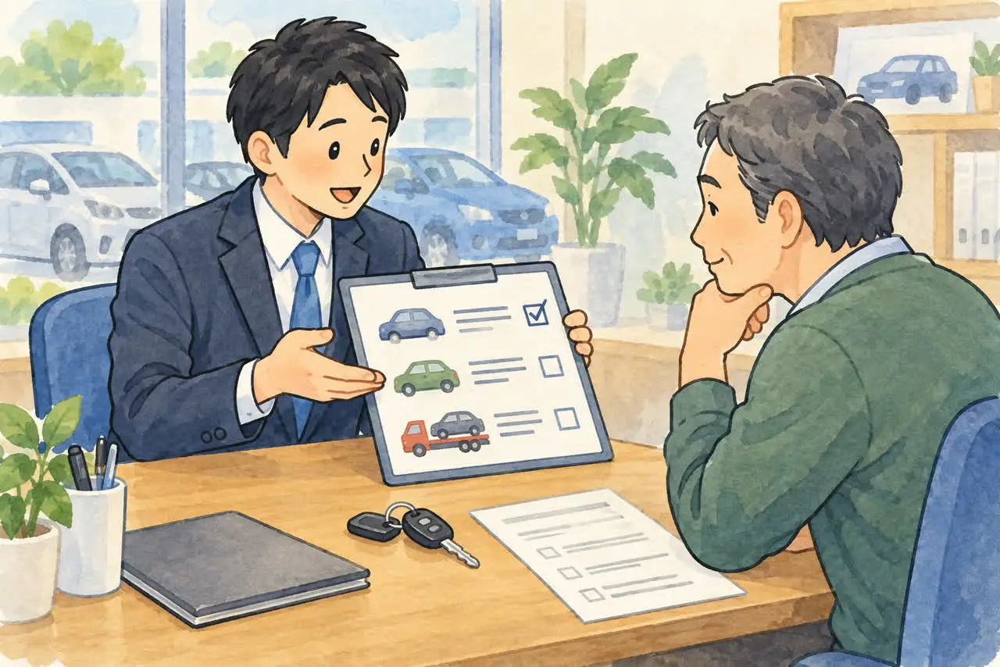
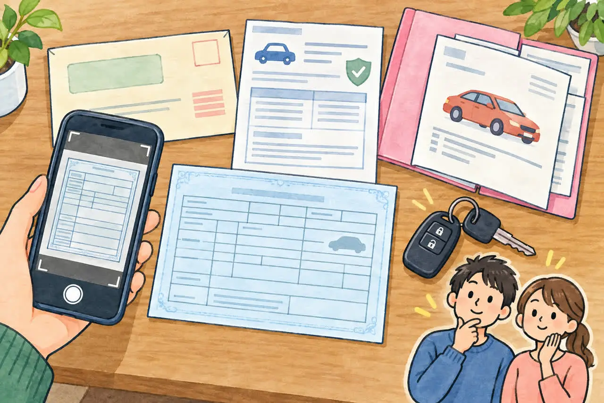
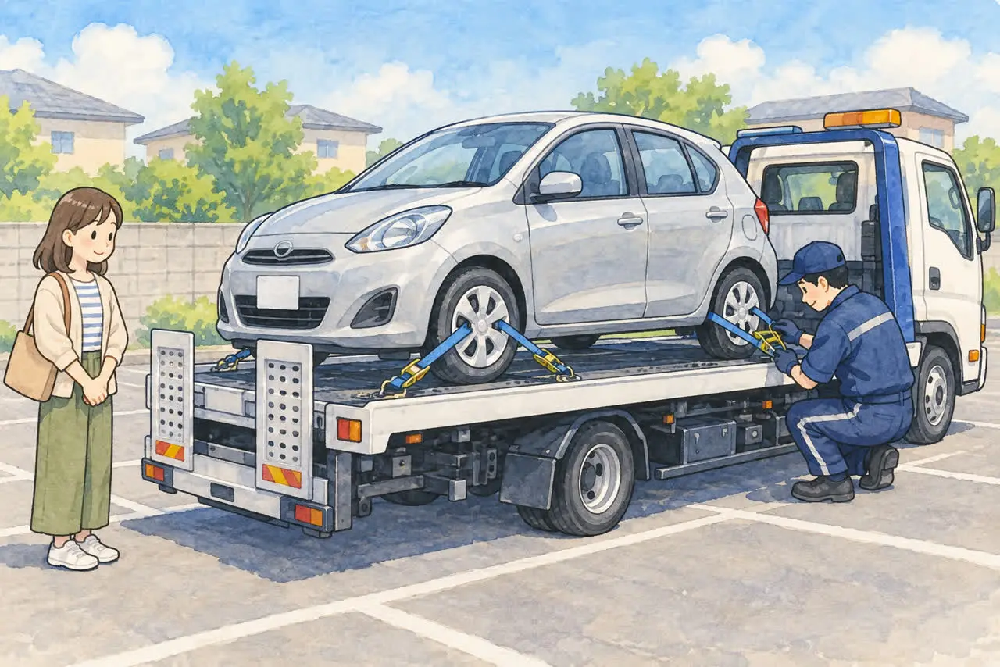

車検証が見つからない方へ
車検証をなくしたけど
廃車できる？
公開
こんにちは、足立区江北で自動車解体・廃車買取をしている「大崎商店 環七店」です。
「車を手放そうと思ったら、車検証が見当たらない」
「引っ越しのときに、どこかにしまい込んでしまった」
「車検証がないと、廃車はできないの？」
こんなご相談を、よくいただきます。
結論からお伝えすると、車検証をなくしてしまっても、廃車はできます。 再交付をせずに手続きを進められる場合もあります。 普通車か軽自動車か、名義や住所の変更があるかなどによって対応が異なるため、まずはご相談ください。 あわてて探し回ったり、あきらめたりしなくても大丈夫です。
この記事では、車検証が見つからないときにまず確認したい場所や、解体する場合と再交付が必要な場合の違い、手元にあると助かるものを、やさしくご紹介します。
まずは落ち着いて、探してみましょう

車検証は、車を手放すときに必ず確認する大切な書類です。見つからないときは、まず次の場所を探してみてください。
- 車のダッシュボードの中（グローブボックス）：いちばん多い保管場所です
- 運転席や助手席のドアポケット、サンバイザーの裏
- 自賠責保険証明書と一緒にしまってある場所：車検証と自賠責保険証明書は、ひとつの入れ物（車検証入れ）に入っていることが多いです
- ご自宅の引き出しや書類入れ：車検のあと、車に戻さず家に持ち帰ってしまうこともあります
- ご家族が保管している：親御さんや配偶者の方が持っていることもあります
最近の車は、電子車検証という、A6サイズ程度の、ICタグ付きの車検証になっています。小さくて薄いため、車の中の書類に紛れてしまうことがあります。券面の書類のほかに、「自動車検査証記録事項」という紙があれば、一緒に探してみてください。
車検証がなくても、再交付せずに廃車できる場合があります

探しても車検証が見つからないときは、先に再交付の手続きをするのではなく、どの廃車手続きが必要かを確認しましょう。
普通車の場合：返納できない理由書で対応できます
普通車の一時抹消登録や、解体後の永久抹消登録では、紛失した車検証を返納できない理由を記載した理由書などを用意して、再交付せずに進められます。理由書には、返納できない事情と使用者の氏名などを記載します。必要な書類や書き方は、お車の状況を確認してご案内します。
軽自動車の場合：名義・住所などの条件を確認します
軽自動車検査協会では、自家用軽自動車で、現在届け出ている名義・住所に変更がない場合は、管轄の窓口で車検証を紛失した旨を申し出て、廃車手続きを進められると案内しています。申請書には車両番号と、届け出ている使用者・所有者の氏名・住所などを記入します。
名義や住所が変わっている場合などは、同じ方法で進められるとは限りません。軽自動車も必ず理由書だけで対応できる、というわけではないため、事前にご相談ください。
再交付が必要になるのは、どんなとき？
再交付とは、車検証をなくしたり、汚したり、破れたりしたときに、もう一度発行してもらう手続きです。車検証を紛失した場合の再交付の要否は、次のとおりです。
以下の一時抹消登録・永久抹消登録は、普通車の手続きです。軽自動車の廃車は、上記の条件を確認してご案内します。
| 普通車の状況 | 車検証の再交付 |
|---|---|
| 廃車にする（一時抹消登録＝車の使用をいったん中止する手続き） | 原則不要。理由書で対応 |
| 廃車にする（永久抹消登録＝解体して登録をなくす手続き） | 原則不要。理由書で対応 |
| そのあとも車として使う | 再交付が必要 |
車を解体せず、そのあとも登録された車として使う場合や、登録を残したまま売却・名義変更する場合などには、再交付が必要になります。
大崎商店では、再交付の手続きも代行しています。 平日に運輸支局へ行くのが難しい方も、ご相談ください。
参考：再交付の窓口と必要なもの
ご自身で再交付を受ける場合の窓口と、主な必要書類です。
普通車
窓口は、車を使っている場所を管轄する運輸支局などです。足立区にお住まいの場合は、足立自動車検査登録事務所になります。
- 申請書（OCR申請書第3号様式）
- 手数料納付書（検査登録印紙を貼ったもの）
- 再交付の理由の記入（申請書に記入するか、理由書を添付します）
- 申請する方の本人確認書類（運転免許証、マイナンバーカードなど）
- 委任状（代理人が申請する場合）
再交付の法定手数料は450円です（2026年10月時点）。代行を依頼する場合の料金は別途ご確認ください。
軽自動車
窓口は、軽自動車検査協会の事務所・支所・分室です。
- 自動車検査証再交付申請書（軽第3号様式）
- 申請依頼書（使用者以外の方が手続きをする場合）
再交付の法定手数料は1件につき450円です（2026年10月時点）。
どちらの場合も、ご自身で窓口へ行く前に、まずは大崎商店へお電話ください。再交付が本当に必要かどうかを、お車の状況から確認します。
車検証がなくても、手元にあると助かるもの

車検証が見つからなくても、次のものがあれば、お電話での相談がスムーズです。
- 車検証のコピーや写真：以前に撮ったスマートフォンの写真でも大丈夫です
- 自賠責保険証明書：車の登録番号や車台番号が書いてあります
- 自動車税の納税通知書：車の情報や、持ち主の名前・住所が書いてあります
- 車の購入時の書類：ローン契約書や、販売店の書類などです
- ナンバープレート：登録番号（ナンバー）は、車についているプレートで確認できます
- 車台番号：車の中の決まった場所に刻印されています
これらがあれば、車の情報を調べるのに役立ちます。すべてなくても、わかる範囲で大丈夫です。
コピーや写真、「自動車検査証記録事項」は相談の参考資料であり、車検証の原本の代わりにはなりません。 記録事項の紙だけが見つかっても、電子車検証の原本があるか確認してください。
車検証をなくしたときの注意点
車検証を紛失したまま公道を運転しないでください
公道を走るときは、有効な車検証を車に備え付ける必要があります。電子車検証も原本が必要で、コピーや記録事項の紙だけでは代わりになりません。廃車のためにお店へ運転して持ち込まず、引き取りをご相談ください。車検が切れている場合は「車検切れの車は公道を走れない。どうやって廃車にする？」もご覧ください。
車検証以外の書類も確認しましょう
車検証をなくしたときは、ほかの大切な書類も一緒になくしていることがあります。
自賠責保険証明書
車検証と一緒に保管していることが多いため、一緒に見当たらないことがあります。自賠責保険は、廃車にしたあと、解約日から満期日まで1か月以上残っていれば、保険料が戻ることがあります。なくした場合は、加入している保険会社に連絡して、再発行してもらえます。
ナンバープレート
車についているので、ふつうはなくなりません。ただし、盗難にあったり、紛失したりしている場合は、警察への届け出が必要になることがあります。
所有者が自分以外のときは、先に相談を
車の所有者が、ディーラーやローン会社になっている場合があります。電子車検証の券面には所有者情報がないため、手元にある「自動車検査証記録事項」なども確認してください。この場合、車検証をなくしてしまうと、ご自身だけでは手続きを進められないことがあります。
「ローンが残っているかもしれない」「家族の名義かもしれない」という場合も、書類を取りに行く前に、まずご相談ください。
廃車の相談・手続きで用意するもの
再交付が必要かどうかは、車の種類と手続きの内容を確認してご案内します。まずは手元にあるものをご用意ください。
普通車の場合
- □ 車検証（見つかったもの。見つからない場合は、紛失したことをお知らせください）
- □ ナンバープレート（前・後ろの2枚）
- □ 所有者の印鑑登録証明書（発行から3か月以内）
- □ 所有者の実印
委任状や譲渡証明書は、当店で用意します。引き取りのときに、記入と実印の押印をしていただければ大丈夫です。
軽自動車の場合
軽自動車の場合は、基本的に次の2点です。
- □ 車検証（見つかったもの。見つからない場合は、紛失したことをお知らせください）
- □ ナンバープレート（前・後ろの2枚）
軽自動車では、印鑑登録証明書や実印は不要です。
詳しい書類については「廃車に必要な書類チェックリスト（普通車）」「軽自動車の廃車に必要な書類・準備チェックリスト」の記事もご覧ください。
ご相談から廃車までの流れ

- お電話でご相談
車検証が見つからないこと、わかる範囲の車の情報（車種、登録番号、置いてある場所など）をお知らせください。 - 必要な手続きのご案内
普通車・軽自動車の別、名義や住所などを確認し、再交付の要否と必要な書類をご案内します。 - 書類のご準備
印鑑登録証明書など、お客様にご用意いただくものをお伝えします。 - 車の引き取り
積載車で伺います。エンジンがかからない車や、車検が切れた車でも大丈夫です（エンジンがかからない車でも引き取ってもらえる？）。 - 廃車の手続き
解体や抹消登録などの手続きは、当店が代行します。
引き取り当日の様子は「廃車のご依頼から現金お支払いまでの流れ」でもご紹介しています。
車検証が見つからなくても、あきらめないでください
車検証をなくしたことに気づくと、「もう廃車にできないのでは」と不安になりますよね。再交付をせずに廃車手続きを進められる場合もあります。車を引き続き使う場合の再交付も、当店で代行しています。どうしたらいいか迷ったら、まずお電話でご相談ください。
また、車検証が見つからない車は、長く乗っていなかった車や、ご家族の車であることが多いです。そのような車の引き取りも、まずはお気軽にご相談ください。
- 廃車手続きの代行手数料は無料
- 引き取りは無料：買取価格がつかない車も、環七店から車で片道約30分圏内は無料です。圏外でも、所在地と車の状態によっては無料で伺えます（事前にご案内します）
- エンジンがかからない車、車検が切れた車、長く動かしていない車も引き取り
- 車種や状態によっては、引き取り当日その場で現金買取も可能
車の処分を、まるごとお手伝いします。
電話で相談する 03-3854-4141大崎商店 環七店
電話：03-3854-4141
〒123-0872
東京都足立区江北7丁目1−3
営業時間：月〜土 10:30〜18:00
休業日：日曜・祝日
環七沿い／舎人ライナー
西新井大師西駅
大崎商店 入谷店
電話：03-3899-2837
〒121-0836
東京都足立区入谷7丁目5−11
営業時間：月〜土 9:30〜17:30
休業日：日曜・祝日・第2土曜
お電話の際は、「車検証をなくした車の廃車について」とお伝えください。車の登録番号（ナンバー）がわかると、ご案内がスムーズです。
※掲載画像はAIで生成したイラストです。実際の店舗・人物・車両・書類とは異なります。
参考：国土交通省・車を一時使用中止・解体・輸出するためには／国土交通省・車検証の再交付を受けるためには／軽自動車検査協会・車検証の再交付／国土交通省・車検証を返納できない場合の理由書／軽自動車検査協会・車検証紛失時の廃車／国土交通省・電子車検証